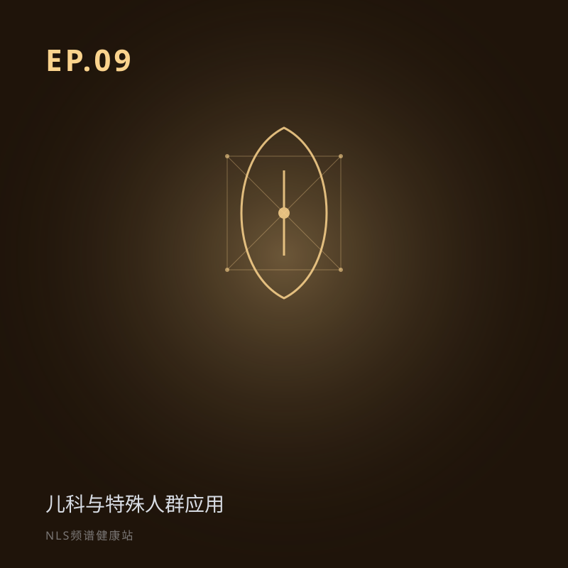

EP.09 儿科与特殊人群应用：最脆弱的人，需要最温柔的工具
所属专题：预防与特殊人群
前八期讲 NLS「能做什么」，本期讲它能「照顾谁」。孩子坐不住、老人怕折腾、孕妇怕辐射——传统检查最难搞的人，恰恰最需要温柔的工具。NLS 无创、无辐射、甚至「睡着了也能查」。但越敏感的人群，越要谨慎。
儿科与特殊人群应用：最脆弱的人需要最温柔的工具。讨论孩子、老人、孕妇、意识障碍者等难配合场景下，无创无辐射的价值与必须遵守的医疗边界。关键词：儿科、孕妇、特殊人群、无创检查。
分段要点
-
00:00开场：治未病对谁最有意义 加强版免责声明；视角从「能做什么」到「能为谁做」。
-
03:00传统检查的温柔盲区 孩子、老人、孕妇、意识障碍者四类难配合人群。
-
10:00儿童与青少年 潜意识水平检测；「睡着了也能体检」；诚实边界。
-
19:00孕妇、老人、康复人群 无辐射价值；干预需医生指导；虚拟内窥镜。
-
26:00特殊人群的诚实边界 无创≠随便用；决策听专科医生。
#儿科#孕妇#老人#特殊人群#无创无辐射
本集内容仅供科普参考，不构成医疗建议。健康决策请咨询专业医生。
阅读完整文字稿（小乐 / 小思对话全文）